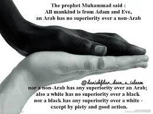

A few Western writers claim that Islam is based on slavery. Considering their bleak history of genocide and slave populations, one marvels at their audacity! They support their claim by referring to pre-Islamic Arabs who carried on the slave trade. In fact, they were among the few opportunists taking advantage of a system that had started long before Islam came on the scene -- a system that Islam was geared to eradicate. Today, it is common knowledge that slavery was the system of labor used by the major civilizations of the world for thousands of years before the advent of Islam. The Pyramids of Egypt, the Great Wall of China the Cities of the Babylonians, the Greeks, the Romans and Persians were all built by slave labor. However, Islam did not build an empire by the enslavement of one man by another; rather, Islam was built on the principle of equality of all men and universal brotherhood. The leaders of Islam knew that an immediate declaration of abolition could not end slavery, but would only create confusion and severe dislocation in that epoch. Instead, Islam instituted a program where slaves could be assimilated into free society. Thus, slavery was gradually phased out from the Islamic society. It was made obligatory that all slaves be educated. Muslims were enjoined to feed and clothe slaves in the same manner as themselves. It was decreed that if a slave wanted to purchase his or her freedom, he or she should be helped with money and the means to maintain an independent life. Harsh treatment of a slave was declared sufficient ground for his or her emancipation. Moreover, the atonement of certain sins was declared the freeing of slaves, and freeing a slave was declared to be a virtue of the highest order equal in value perhaps to prayer and fasting. The Noble Quran commands (what means) : "Marry those among you who are single or the virtuous ones among your slaves, male or female. If they are in poverty, Allah will give them means out of His grace: for Allah encompasses all and He knows all things … And if any of your slaves ask for a deed in writing (to enable them to earn their freedom for a certain sum) give them such a deed if you know any good in them. Yea give them something yourselves out of the means which Allah has given to you. But force not your maids into prostitution when they desire chastity in order that you may make a gain in the goods of this life. But if anyone compels them yet after such compulsion is Allah Oft-Forgiving, Most Merciful (to them)." [Quran 24:32-33] In the legal sense of the word, the law of slavery is now obsolete. During the time it carried meaning, Islam made the slave's lot as easy as possible. Abdullah Yousuf Ali's commentary on the following verses runs as follows: “A slave, male or female could ask for conditional freedom by a written deed fixing the amount required for emancipation, and allowing the slave meanwhile to earn money by lawful means and perhaps marry and bring up a family. Such a deed was not to be refused if the request was genuine and the slave had character. Not only that, but the master is directed to help with money out of his own resources in order to enable the slave to earn his or her own liberty. "Where slavery was legal, what is now called the 'white slave traffic', was carried on by wicked people like 'Abdullaah bin Ubayy, the hypocrite leader at Al-Madeenah. This is absolutely condemned. While modern nations have abolished slavery, ‘white slave traffic’ is still a big problem. It is absolutely condemned in Islam. No more despicable trade can be imagined. The poor unfortunate girls that are victims of such a nefarious trade will yet find mercy from Allah, whose bounties extend to the lowest of His creatures. "Under the unique program of assimilation, slaves in the Islamic era were able to acquire all the rights of free citizens, and attained the highest levels of social, political and economic achievement. The Prophet Muhammad sallallaahu `alayhi wa sallam ( may Allah exalt his mention ) (may Allah exalt his mention) actually warned his followers to: "Listen and obey even if a black slave becomes your leader, so long as he should enforce amongst you the Law of Creator."
Thus we read about Bilaal Al Habashi, may Allah be pleased with him, a former slave from Ethiopia who became the closest aide of the Prophet sallallaahu `alayhi wa sallam ( may Allah exalt his mention ) and one of Islam's most prominent personalities. Bilaal, may Allah be pleased with him, also possessed a marvelous, melodious voice and was chosen to call the believers to Prayer in the lifetime of the Prophet sallallaahu `alayhi wa sallam ( may Allah exalt his mention ). Then there was Zayd bin Haarithah, may Allah be pleased with him, the slave whom the Prophet sallallaahu `alayhi wa sallam ( may Allah exalt his mention ) adopted, showering upon him a father’s love and affection, so that he grew up to become one of Islam's greatest generals. In Islamic history, we find entire dynasties of people who were once slaves, but then attained power and achieved victories for the entire Muslim nation. We read about Kaafoor, a slave from the Sudan who rose to be ruler of Egypt and Syria whose name has since become proverbial for wise leadership in Islam. We read about Malik Ambar, another African slave, who became a brilliant ruler and was one of the Nawaabs (Muslim princes) of India.
Islam opened the doors of social, political and economic equality to slaves – as a result, erstwhile slaves rose to be Sultans, and slave-women became favorites of the ruler and mothers of heirs to the throne. At times, a slave himself became a master and held freeborn men of wealth and power in dread of him. From these few examples we can see that neither one's ancestry, nor the color of one's skin, nor the place of one's birth, were allowed to stand in the way of anyone achieving any position or making any contribution in the Muslim world. Therefore, to say that Islam practiced slavery would be to totally misunderstand (or misrepresent) the dynamics of history and the nature and record of Islam. Some people conveniently forget that there is a profound difference between the ‘slavery’ that existed in the Islamic societies and the picture of slavery that is handed down to us from the Imperial colonies. It was a far cry from the abominations that were practiced in the Imperial colonies, when men from India and Africa were lured or abducted, to be put to work in West Indian sugarcane fields; where the slightest dissent would result in torture by being spread-eagled nude on anthills, or stuffed with gunpowder in both ends and blown away for fun! Or do we care to think of the indentured labor that still exists in the “great democracies” of the world, where generations of men till earth in chains? The Islamic injunctions for the slaves of yore are humane in comparison to the indignities of economic slavery today – unlike the modern-day slaves, at least they could hope for freedom. Going deeper into the matter, a contemporary Muslim scholar, Abu Al-A'laa Mawdoodi may Allah have mercy upon him explains that: "Islam stands for liberation from all sorts of slavery such as may inhibit the progress of humanity, or may not allow it to follow the path of virtue and goodness. It means man's freedom from dictators who enslave him by force or fear, make him do what is wrong and deprive him of his dignity, honor, property and life. Islam liberates man from such tyranny by telling him that all authority vests in the Creator and the Creator alone. He alone is the Real Sovereign ... Thus Islam brings to man to freedom from fear and oppression inflicted on him by men like himself ... "Islam also means the desire for freedom, including the desire for life, as it is this very weakness of man which is exploited by tyrants and dictators, intentionally and otherwise, in enslaving their fellowmen. But for it, no man would silently accept subservience to men like himself, or sit idle to watch tyranny on the rampage and dare not challenge it. It is a great blessing of Islam that it taught man to fight tyranny and oppression bravely rather than cringe before them in abject servitude." Therefore, although Islam stands for Peace, it does not accept peace on humiliating or debasing grounds. Peace in Islam is based on dignity, freedom, brotherhood and lasting security, not upon humiliation and helpless surrender to tyranny, exploitation and oppression.